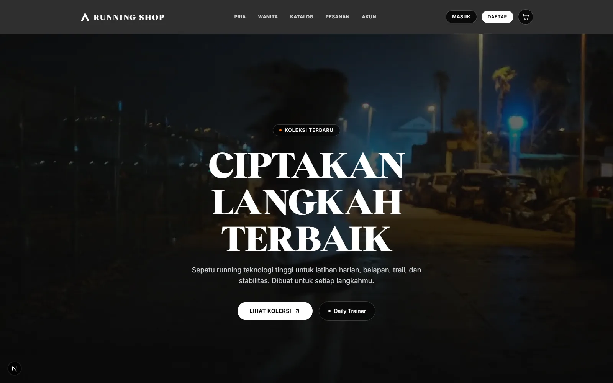

Running Shop
A storefront and back office for a running shoe shop. Next.js on the front, NestJS and Prisma/PostgreSQL behind it: catalog with size and SKU variants, a cart that works signed in or as a guest, checkout with order expiry, Midtrans payments with an idempotent webhook, email notifications, and admin screens for products, orders and reports.
Source
CI: migrate, lint, unit + e2e tests, build on every push